Vi bor på Arena Verudela Beach, et feriested på en furukledd halvøy fire kilometer sør for Pula sentrum. Sjøen er tjue meter unna, bassenget enda nærmere, og Roma-rikets sjette største amfiteater ligger ti minutter unna med bil. Seks personer, to leiligheter, ingen planer vi ikke kan droppe.
Reise utLør 26. sepOslo 18:25 → Pula 21:05
Reise hjemLør 3. oktPula 21:45 → Oslo 00:20 (natt til søndag)
BostedArena Verudela BeachVerudella 11, 52100 Pula
Hvem3 voksne, 3 barnJakob, Eline, Anders + Nikoline, Åsmund, Ludwig
Innsjekk / utsjekkFra 16:00 / innen 10:00Vi kommer sent lørdag kveld, hotellet er varslet
Bekreftelse6509591792Booking.com · hotellets telefon +385 52 590 781
Flyene
Direkte med Norwegian, to og en halv time hver vei
Begge flyene går på kvelden, så vi lander i Pula på lørdagskvelden og har hele hjemreisedagen i sola. Bestillingsreferanse YHW23A.
Utreise · lørdag 26. september
OSLOslo Gardermoen
18:25
DY1942 · 2 t 40
PUYPula
21:05
Vær på Gardermoen senest 16:30. Landing 21:05, bagasje og taxi, så er vi i leilighetene rundt 22. Kjøkkenet er tomt: ta med litt kveldsmat i håndbagasjen, spesielt til de minste.
Hjemreise · lørdag 3. oktober
PUYPula
21:45
DY1943 · 2 t 35
OSLOslo Gardermoen
00:20
Utsjekk innen 10:00, men flyet går først på kvelden. Vi setter bagasjen på hotellet og tar en hel ekstra dag med strand eller Pula sentrum. Landing natt til søndag 4. oktober.
BagasjeLowFare+: én innsjekket kolli (maks 23 kg) per person, pluss liten veske under setet og håndbagasje i hyllen (maks 10 kg til sammen).
InnsjekkingSjekk inn på nett dagen før. Gyldig pass eller nasjonalt ID-kort for alle, også barna. Kroatia er i Schengen, så ingen passkontroll, men ID må vises ved innsjekk.
Sjåføren ordner segFlyplassen ligger 10 km fra hotellet. Taxi tar et kvarter. Med leiebil henter vi den på flyplassen og leverer den samme sted lørdag kveld.
Hotellet
Arena Verudela Beach ★★★★
Lave leilighetsbygg mellom furuene på Verudela-halvøya, med sjøen på tre sider. Vi har to leiligheter med eget kjøkken, balkong og aircondition, så frokosten kan spises i pysjen og barna kan legges uten at kvelden er over for de voksne.
Feriestedet har utebasseng med barnebasseng, egne strender med trapper ned i sjøen, lekeplass, restaurant og bar, og et lite supermarked. Fem minutter til fots ligger Pulas akvarium i et gammelt østerriksk fort, og på nabotomta ligger Park Plaza Histria med større bassengområde. Sentrum nås med bybuss eller ti minutters taxi.
Hel leilighet · plass til 5 · stue med spiseplass og kjøkken
🛏️
Anders og Ludwig
Soverom 1
AL
🛏️
Jakob
Soverom 2, eget rom og ro om morgenen
J
Kjøkkenet har kokeplater, mikro, kjøleskap, kaffemaskin og vannkoker. Fellesmiddagene kan lages her, og bordet tar hele gjengen.
BalkongAirconditionKjøkkenNetflix på TVSafeHårfønerUtemøblerTrapper, ikke heis
Leilighet 2
Ett soverom, utsikt mot sjøen
Hel leilighet · plass til 4 · balkong med havutsikt
🛏️
Eline
Soverommet
E
🛋️
Nikoline og Åsmund
Seng og sovesofa i stua
NÅ
Balkongen vender mot Adriaterhavet, så her er det morgenkaffen skal drikkes. Samme kjøkkenutstyr som leilighet 1.
Balkong med havutsiktAirconditionKjøkkenNetflix på TVSafeHårfønerUtemøblerTrapper, ikke heis
Betalt og bekreftetBegge leilighetene er betalt via Booking.com. Ingen frokost inkludert, men vi har to kjøkken og en restaurant på området. Booking er ikke refunderbar.
BarnesengSprinkelseng kan bestilles gratis for barn under 2 år, men det trenger vi ikke. Sovesofaen i leilighet 2 er en ordinær dobbeltsovesofa.
TrapperBegge leilighetene ligger i etasjer uten heis. Vi ber om lavest mulig etasje for leilighet 1 når vi sjekker inn.
Rett utenfor døra
Strand, basseng og en furuskog å gå seg vill i
Verudela er en halvøy som stikker ut i Adriaterhavet, med stier langs klippene, små buktebadeplasser og et gammelt fort som er blitt akvarium. Alt under ligger innenfor fem til femten minutters gange fra leilighetene.
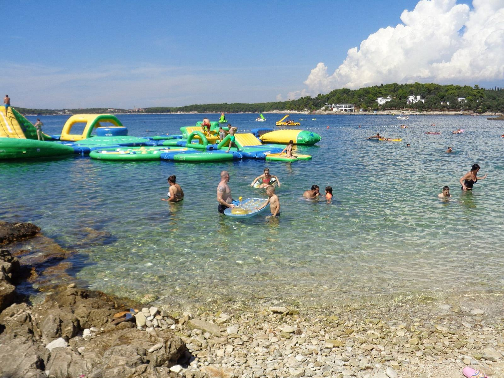
Ambrela-stranda, ti minutter fra leilighetene
Tre strender, tre humør
Hawaii-bukta ligger rett nedenfor leilighetene: en liten hvit rullesteinsbukt mellom furuene, med det klareste vannet på hele halvøya. Steintrapp ned, snorkling mellom klippene, og det blir fort dypt, så her holder vi treåringen i hånda. Ambrela er den store stranda med Blått flagg, dusjer, livredder og en trampoline i vannet. Histria-stranda under nabohotellet har flate svaberg og det roligste vannet, perfekt for de minste.
Badesko til alle. Ingen sandstrender her, bare rullestein og svaberg.
Sjøen holder rundt 21–22 grader i slutten av september. Fullt badbart for nordmenn.
Lungomare-stien langs klippene binder strendene sammen. Fin kveldstur med is.
Hawaii-bukta, rett nedenfor leilighetene
Bassengene på toppen av bakken
Feriestedet deler bassengområde med Park Plaza Verudela: tre utendørs sjøvannsbasseng, et barnebasseng og vannsklier, med pool-baren Oliva rett ved. Det er en liten oppoverbakke fra strandsiden, så vi tar det som formiddagsturen. Sesongen varer ut første uka i oktober, så vi er der akkurat før de stenger, og solsengene er ledige.
Bassengene er ikke oppvarmet. Solrike dager fra lunsj er best.
Park Plaza Histria, fem minutter unna, har innendørs oppvarmet sjøvannsbasseng. Vi spør i resepsjonen om dagpass.
Lekeplass, minigolf, bordtennis og tennisbaner ligger på området.
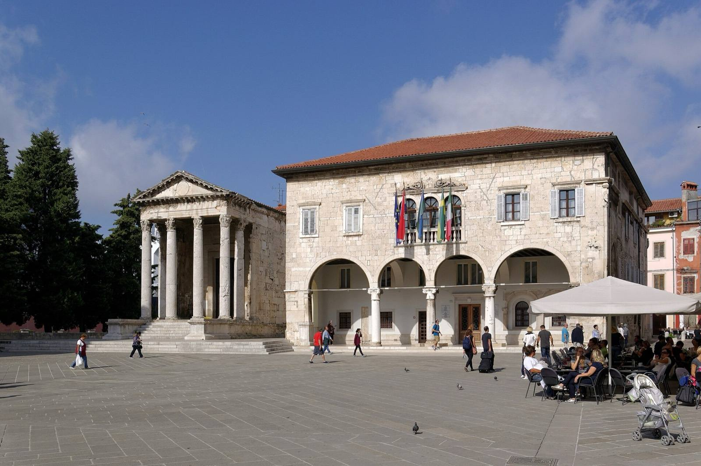
Forum i Pula, femten minutter med buss 2A
Akvariet i fortet, og butikken på hjørnet
Fem minutters gange fra leilighetene ligger Aquarium Pula, Kroatias største, bygget inn i et østerriksk fort fra 1886. Adriaterhavets fisker, hai, maneter, et sjøskilpadde-sykehus og en sommerfuglhage, pluss utsikt fra fortets tak. Et sikkert kort for en regnværsdag eller en ettermiddag der noen trenger noe annet enn strand.
Åpent 09–21 i september, 09–19 fra 1. oktober. Voksne €25, barn 7–18 €20, barn 3–6 €16, under 3 gratis.
Barnevogn må stå igjen i inngangen. Bæresele til minstemann.
Minimarked på området med ferskt brød. Lidl ligger et kvarters gange unna, og Konzum på Veruda-markedet.
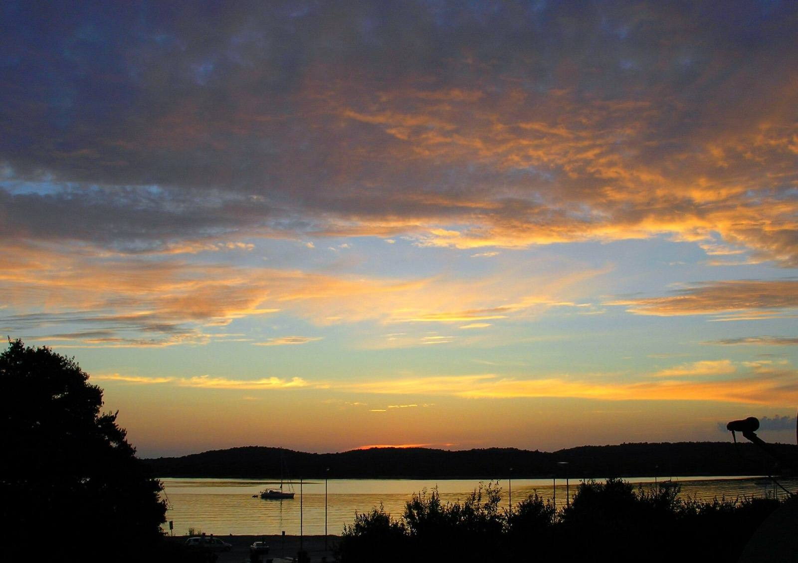
Solnedgang fra klippeneSola går ned rundt 19 i slutten av september
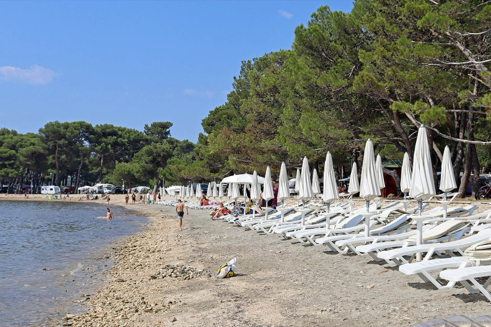
Bijeca, MedulinIstrias eneste sandstrand, 20 min med bil
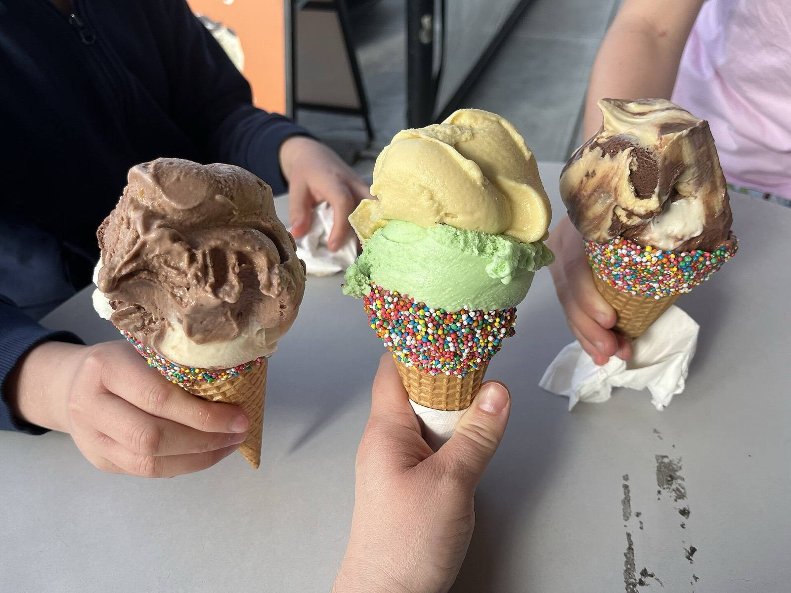
Is hver dagPomaj ved Arenaen og Slastičarna Stoja
Byen
Et romersk amfiteater midt i en havneby
Pula var romernes by ved Adriaterhavet. Arenaen fra keiser Vespasians tid står nesten komplett, med plass til 23 000 tilskuere, og resten av sentrum er tempel, triumfbue og trange venetianske gater ned mot havna. Barna kan løpe i sanden der gladiatorene sto.
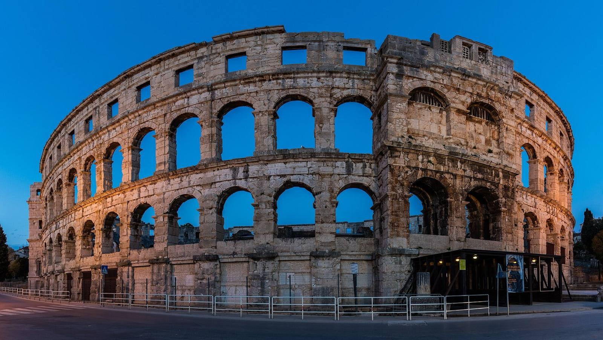
Pula Arena, det sjette største amfiteateret i Romerriket
Arenaen
Bygget mellom år 27 f.Kr. og 68 e.Kr., og i dag den eneste romerske arenaen der alle fire hjørnetårnene står. Under tribunene er det en utstilling om olivenolje og vin i romersk Istria, med gamle pressverk barna kan studere. Sett av en time, og gå tilbake på kvelden for å se den lyssatt.
Åpent 08–21 i september, 09–19 i oktober. Voksne €10, barn €5, under 5 gratis. Hele familien: €40.
Kjøp billetter på nett (shop.ami-pula.hr) så vi slipper køen.
Gladiatorshowene er ferdige for sesongen, men arenaen i seg selv holder lenge.
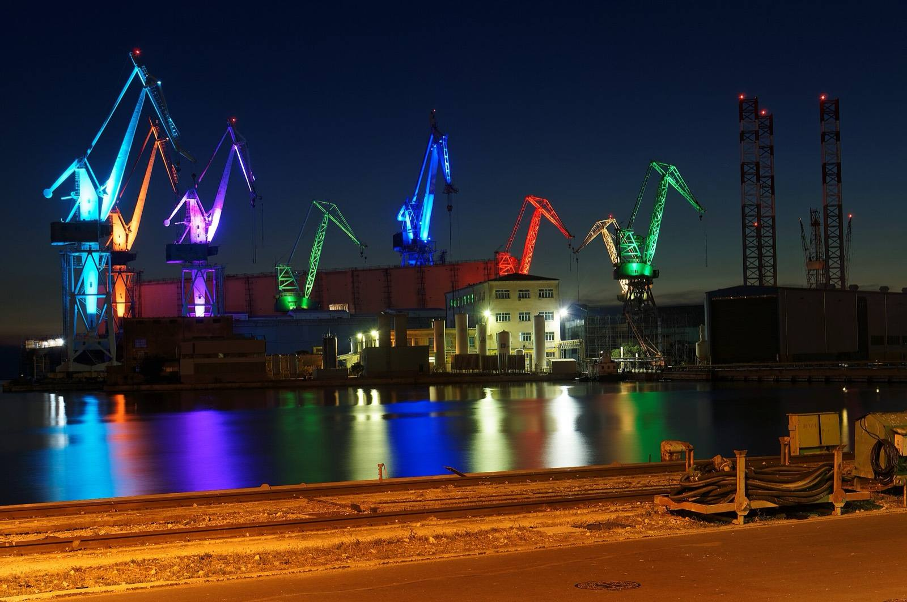
Lighting Giants, hver hele time etter mørkets frembrudd
De lysende kjempene
Kranene på det gamle Uljanik-verftet, midt i havna, lyses opp i skiftende farger hver hele time fra skumringen til 22. Vi ser det best fra Riva, havnepromenaden rett nedenfor Arenaen. Etter middag i sentrum, med is i hånda, klokka 20 eller 21. De minste kommer til å snakke om det i ukevis.
Gratis. Femten minutters show på hel time.
Buss 2A går fra sentrum tilbake til Verudela til 22:45. Bolt fungerer i Pula, Uber gjør det ikke.
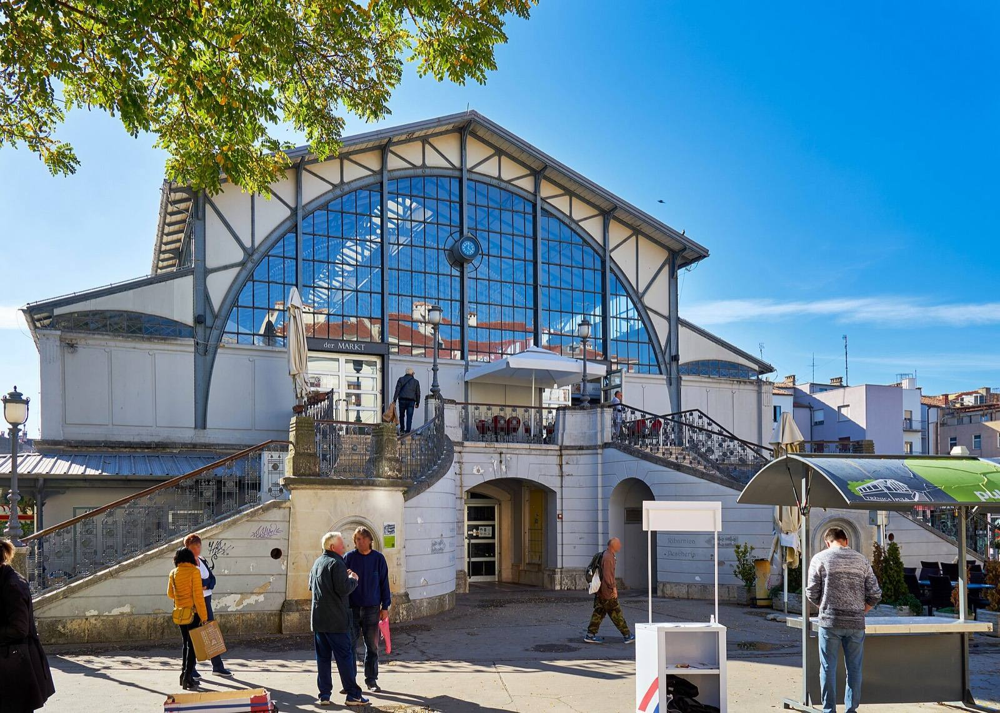
Markedshallen fra 1903
Markedet, festningen og tunnelene under byen
Markedshallen i jern og glass er stedet for frokost: fersk frukt, burek, ost og pršut til kjøkkenet vårt. Åpent fra 07 hver dag, søndag bare til 12. Rett bak ligger Kaštel, den venetianske festningen med utsikt over hele byen, og under den Zerostrasse, kilometervis med tunneler fra første verdenskrig som en heis binder sammen med festningen. Elleveåringen kommer til å elske det.
Kaštel + Zerostrasse: én billett, voksne €8, barn 5–16 €3, under 5 gratis. Åpent til 21 i september, til 17 fra oktober.
Augustus-tempelet på Forum: €2, ti minutter, og kaffe på Cvajner rett ved.
Søndag 27. september 18–20:30: kostymert gateteater om det østerriksk-ungarske Pula i sentrum.
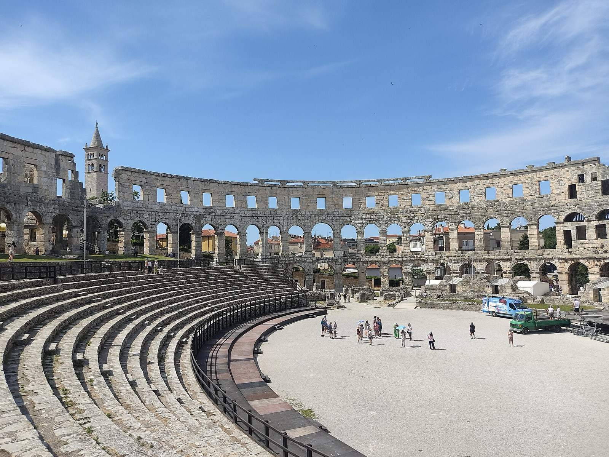
Inne i ArenaenTribunene og de underjordiske gangeneLungomare4 km kyststi fra Stoja til Verudela
Mat og drikke
Trøffelsesongen starter akkurat når vi lander
Istria er Italias kjøkken uten Italias priser: håndrullet fuži-pasta med hvit trøffel, boškarin-okse, grillet fisk fra morgenens fangst, pršut og malvazija-vin. Og pizza så god at barna ikke klager. Hvit trøffel fra Mirna-dalen er i sesong fra slutten av september.
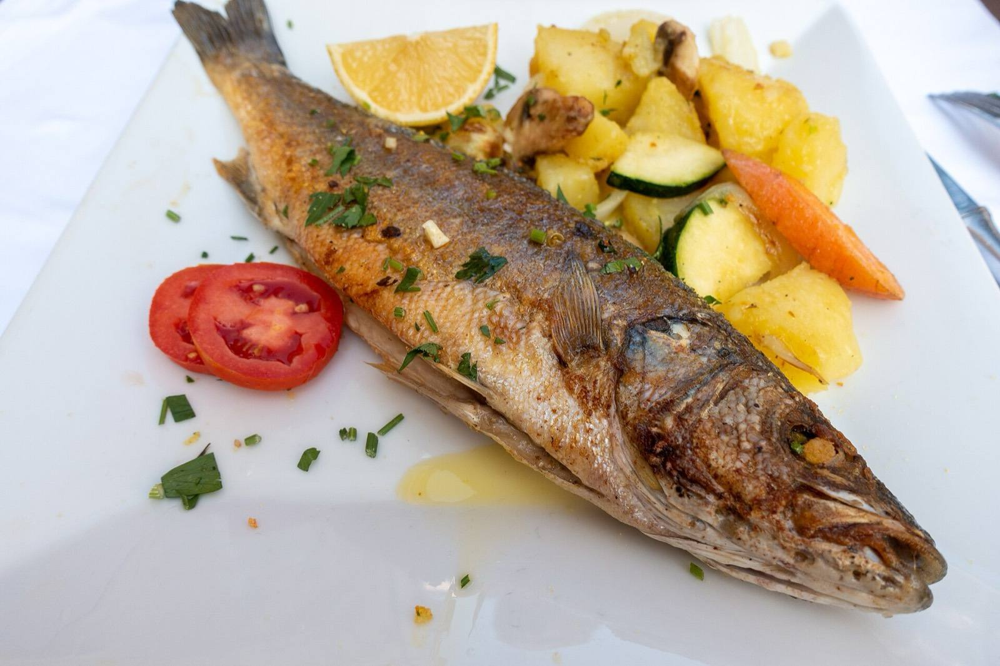
Dagens fangst på en konoba
Slik spiser vi
To kjøkken betyr at vi lager frokost og enkle middager selv, og bruker restaurantene på det som er verdt det: én stor Istria-middag med trøffel, én fiskemiddag ved sjøen, pizza når barna bestemmer, og is hver dag. Prisene ligger under Oslo-nivå: pizza €10–15, pasta med trøffel €15–25, hel grillet fisk €25–40.
Drikkepenger rundt 10 % på restaurant, avrunding på kafé.
Kort funker nesten overalt. Batelina tar bare kontanter.
Barnemeny finnes på Boschetto og Oliva. Ellers deler vi.
Rett ved leilighetene
Boschetto
Verudela, i furuskogen ved feriestedet
Pizza, istrisk pasta og calamari, med egen lekesone for barna og barnemeny. Livemusikk noen kvelder. Stedet vi går til første kvelden når ingen orker å tenke.
€15–35 per person · åpent 11–22:30 · ingen booking nødvendig
Ved bassenget
Pool Bar Oliva
Park Plaza Verudela, ved bassengene
Pizza fra €6, pasta, salater og grill. Gjestene kaller det feriestedets beste kjøp. Lunsj i badetøy.
€6–15 · åpent 10–22
Fisk ved marinaen
Ribarska Koliba
Verudela 3, Marina Veruda, 10 min gange
Michelin-listet fiskerestaurant med glassveranda over båtene. Sjøkreps på grillen eller i busara-saus, dagens fisk i saltskorpe. Kveldsmiddag for de voksne, eller en stor familielunsj.
€25–60 · reserver
Barnas pizza
Pizzeria Jupiter
Castropola 42, under Kaštel i sentrum
Vedfyrt pizza, digre porsjoner, terrasser i skråningen under festningen. Over 14 000 Google-anmeldelser og fortsatt 4,7. Etter Arenaen, før de lysende kranene.
€10–15 · åpent 12–23:30 · drop-in
Den store Istria-middagen
Konoba Boccaporta
Dolinka 18, Pula, 10 min med bil
Fuži med trøffel, boškarin-okse, kalv under peka-klokka og grill på åpen peis. Ekte konoba med tregulv og lange bord. Her tar vi kvelden med Jakob i hedersetet.
€45–50 per person · reserver
Fiskesplurgen
Konoba Batelina
Čimulje 25, Banjole, 10 min med bil
Ingen meny. Kokken David Skoko, en fisker, bestemmer: rå og marinert fisk, haileve, grillet sjøkreps. Michelin Bib Gourmand og 4,7 på tusen anmeldelser. Voksenkveld, mens barna er hos bestefar eller motsatt.
€25–50 per person · stengt søndag · kun kontant · book uker i forveien
Sjømat uten fakter
Farabuto
Sisplac 15, Veruda, 1,5 km fra hotellet
Slow food-sjømat i nabolaget: fylt blekksprut, grillet tunfisk, hjemmelaget pasta. Rolig, lokalt, og nært nok til å gå hjem.
€45–50 per person · reserver · stengt søndag
Bak markedet
Trattoria Vodnjanka
Dinka Vitezića 4, sentrum
Familiedrevet siden sekstitallet, med en ørliten meny: dagens kjøtt eller dagens fisk, og marinert fisk til forrett. Der lokalbefolkningen spiser.
€22–45 · åpent 15–22, stengt søndag
Lunsj i gågata
Kantina
Flanatička 16, ved Sergius-buen
Hvelvet kjeller og uteservering i gågata. Trøffel-fuži, tunfiskbiff og gode kaker. Åpner 07 på hverdager, så også frokost.
€20–40 · stengt søndag
Kaffe og kake
Bistro Alighieri
Danteov trg 3, ved posthuset
Pljukanci med trøffel, spaghetti vongole, og kaker til ettermiddagskaffen. Åpent fra 08 på hverdager.
€15–35
Is
Pomaj Gelato & Bar
Istarska 38, ved Arenaen
Håndlaget gelato to minutter fra amfiteateret. På Stoja, mellom sentrum og hotellet, ligger Slastičarna Stoja med 4,5 i snitt.
€2–4 per kule
Regnværsdag
Peekaboo
Sv. Polikarpa 8, ved Arenaen
Innendørs lekeland for 0–12 år i tre soner, med pizzeria. Åpent 16–21 på hverdager, 12–21 lørdag og 10–21 søndag. Foreldre gratis.
Pizza €11–15
Dagsturer
Safari, dinosaurer, trøffelskog og en by på en klippe
Istria er lita: alt under ligger mellom tjue minutter og en drøy time fra leilighetene. Med en sjuseters leiebil kan vi ta tre store turdager, og bruke resten på strand og basseng. Fra 1. oktober faller prisene på både Brijuni og Kamenjak, så de to legger vi til slutten av uka.
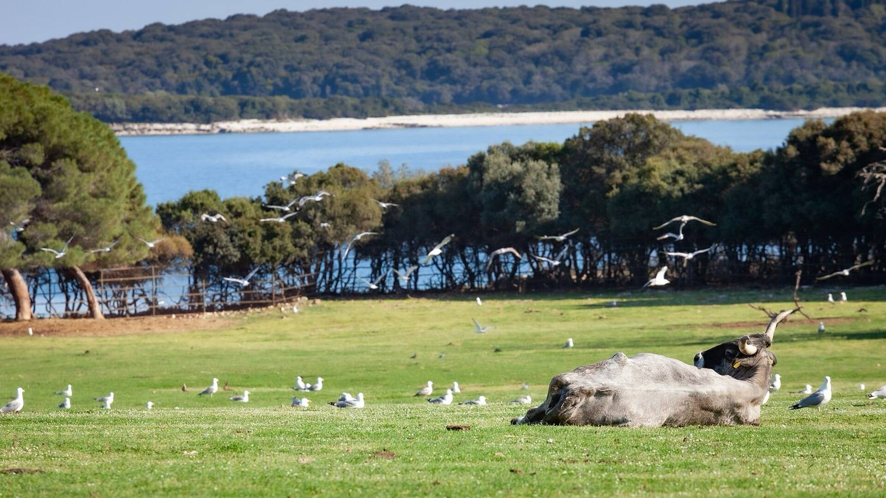
25 min til Fažana + 15 min båt
Brijuni nasjonalpark
Titos private øyrike. Bilfri øy med turisttog, safaripark med sebraer, lamaer, strutser og elefanten Lanka, en romersk villa i Verige-bukta, og ekte dinosaurfotspor i fjæra. Etter den guidede turen leier vi en seksseters elbil og kjører selv til fotsporene og lengst ut på Kapp Ploče.
For barna: tog, dyr og dinosaurer på samme dag. Flatt og asfaltert, så også fint for bestefar og vogn.
Båt 09:00 eller 10:00 fra Fažana · guidet tur voksne €50 (€35 fra 1. okt), barn 7–18 €20 (€15), under 7 gratis · elbil 6 seter €75/t · book på shop.np-brijuni.hr · ingen butikker på øya, ta med niste
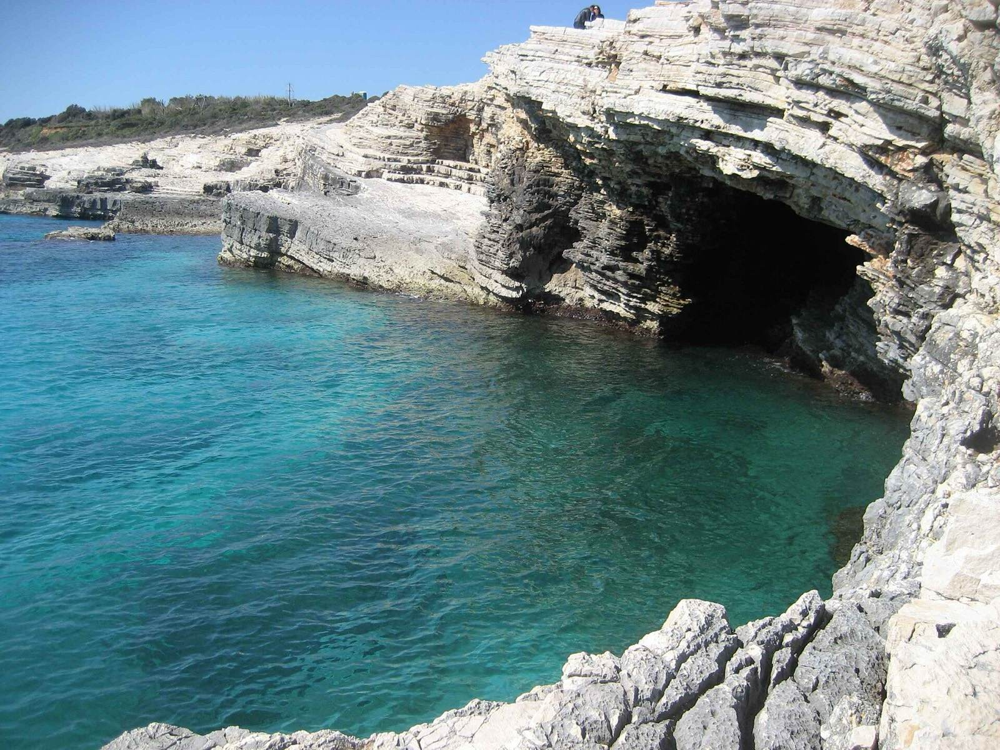
20 min · halv dag
Kapp Kamenjak
Istrias sørspiss er en naturpark med tretti bukter, grusveier mellom furuene og ikke en eneste bygning utenom Safari Bar, en drivvedbar med en svær huske og kjent limonade. Njive-bukta har småstein og grunt vann for de minste. Ved Mala Kolombarica hopper de store fra klippene, med en voksen ved siden.
For barna: dinosaurstien fra Pinižule til Kapp Grakalovac, 1,5 km med tolv ekte fotspor og modeller i full størrelse.
Bil €10/dag ut september, trolig gratis fra 1. okt · sykkel med barnevogn fra Rex Rent i Premantura €20/dag · Safari Bar +385 91 627 84 67 · grusvei, kjør sakte
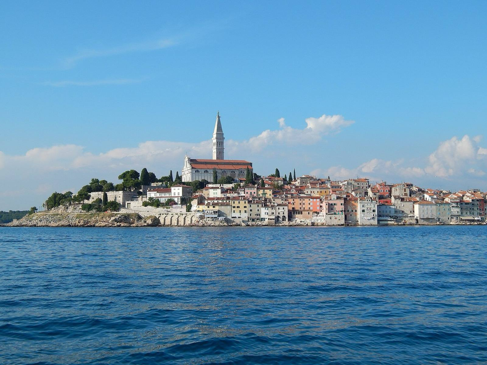
45 min · hel dag
Rovinj og Limfjorden
Den vakreste byen på Adriaterhavskysten: en venetiansk gamleby stablet på en halvøy, med kirketårn på toppen, båter i havna og gelato på hvert hjørne. Punta Corrente-parken tjue minutter unna har bukter og furuskygge. På vei hjem svinger vi innom Limfjorden, en ti kilometer lang havarm med hundre meter høye klipper og østersoppdrett.
For barna: det lille akvariet ved havna (åpent til 15. okt), båttur i fjorden med piratgrotte, og Gelateria Italia i gamlebyen.
Parkering Valdibora €3,50/t (€2 fra okt) · kirketårnet €3, 200 bratte tretrinn, unngå kl. 12 · Limfjord-båt fra Vrsar ca. €20, 2,5 t · østers på Fjord (åpent daglig) eller Viking (stengt mandag)
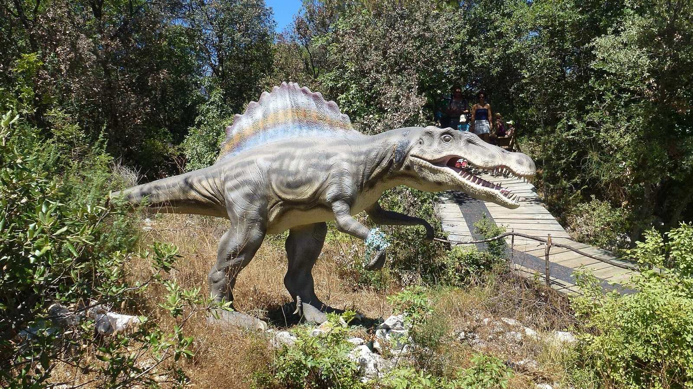
65 min · hel dag
Dinopark Funtana, Baredine-grotta og Poreč
Den reneste barnedagen. Dinopark har 1,5 km skogssti med bevegelige dinosaurer, femten karuseller, piratshow, fossilgraving og ponniridning. Ti minutter unna ligger Baredine, en dryppsteinsgrotte seksti meter ned i bakken med olm-salamandere, og Poreč har en basilika fra 500-tallet med gullmosaikk som er verdensarv.
For barna: alt sammen. For bestefar: kafeen på toppen av grotta om de 270 trinnene frister lite.
Dinopark 10–18, voksne €32, barn 4–14 €28, under 4 gratis, «happy hour» fra 15 €27/€23 · ring +385 52 445 327 dagen før, stenger i regn · Baredine 10–17 (10–16 i okt), €14/€10, 14 grader, ta jakke · unngå Poreč lørdag 3. okt (sykkelritt)
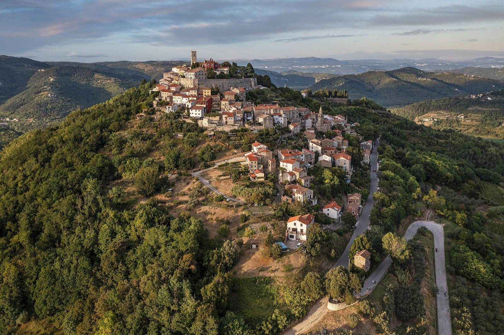
75 min · hel dag
Motovun og trøffeldalen
En middelalderby på toppen av en ås, med bymur du kan gå rundt og utsikt over Mirna-dalen der verdens dyreste sopp graves opp. I Livade nedenfor ligger Zigante, trøffelkongens restaurant og butikk. Lørdag 3. oktober åpner Zigante Truffle Days i Livade: gratis inngang, boder, show-cooking og trøffelhunder som viser hvordan de finner dem.
For barna: pendelbussen opp bakken, murene, og pasta med trøffel er faktisk barnemat. Privat trøffeljakt med hund hos Karlić i Buzet tar imot alle aldre.
Parkering under byen ca. €7, bymuren ca. €5 · Zigante: pasta med trøffel €23, book på WhatsApp +385 91 430 12 00 · billigere og like god: Konoba Dolina i Gradinje, 5 min fra Livade · trøffeljakt Karlić ca. €130 pp, book 3 dager før
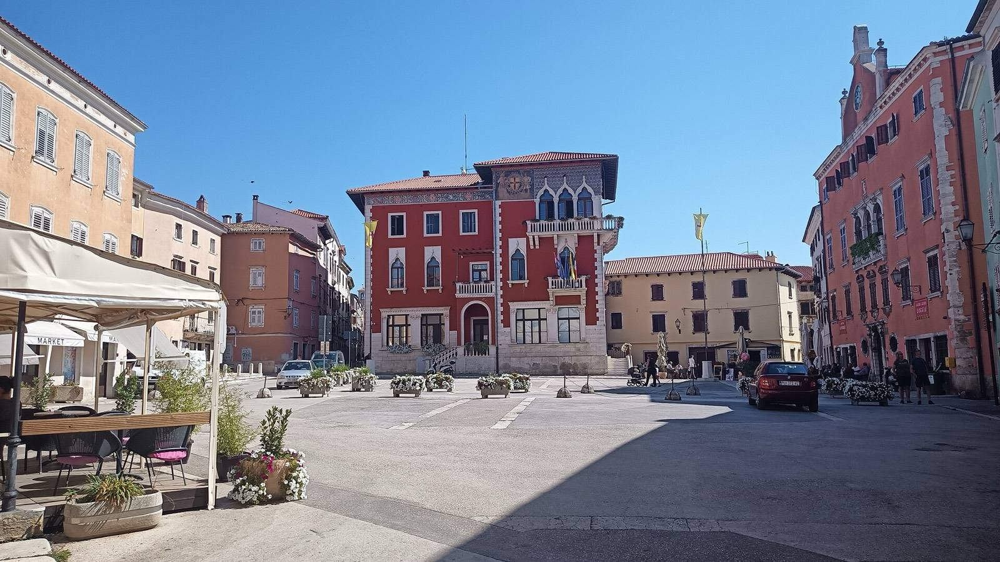
20 min · halv dag
Vodnjan, olivenolje og Fažana
Vodnjan har Istrias høyeste kirketårn og tre helgener som ligger uforfalt i glassmontre. To kilometer utenfor ligger Chiavalon, en av verdens beste olivenoljeprodusenter, med gratis smaking i pressa. Rett ved veien til Fažana står Kažun-parken, tørrmurte steinhytter barna kan krype inn i. Avslutt med solnedgang over Brijuni fra promenaden i Fažana.
For barna: Kažun-hyttene, tårnet, og over tretti gatekunstverk å lete etter i Vodnjan.
Mumiene: fra oktober kun etter avtale, +385 97 661 7522 · Chiavalon man–fre 8–20, lør 9–14 · tårnet €5/€2,50 · lunsj på Vodnjanka (stengt søndag)
15 min · halv dag
Medulin og sandstranda Bijeca
Istria er rullestein overalt, bortsett fra her: én kilometer gyllen sand, grunt langt ut, furuer som gir skygge, lekeplass og dusjer. Nesten tom i slutten av september. Vižula-halvøya rett ved har en romersk villa, flate stier og to strandbarer.
For barna: bøtte og spade, endelig. Bestefar får en benk i skyggen.
Buss 25 fra Pula eller bil · gratis · Salt & Pepper i Medulin for burgere og blekksprut · båttur til Kamenjak-grotta og Porer-fyret fra havna, €45 med lunsj
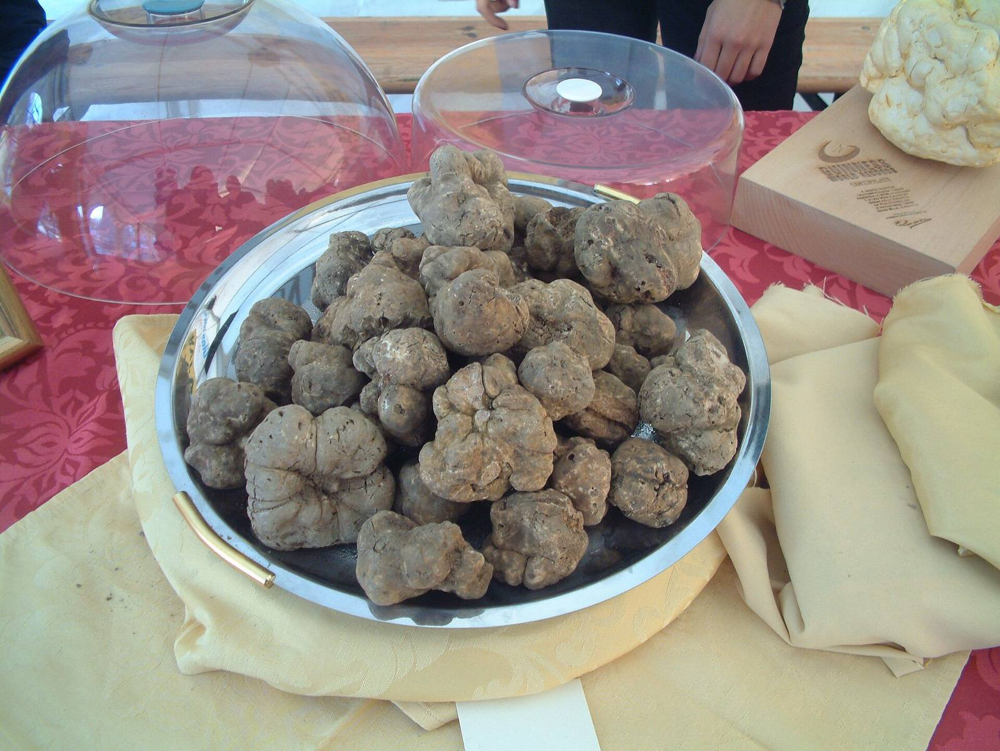
50–70 min · valgfritt
Pazin, Hum og trøffeljakt
Om noen vil dypere inn i landet: Pazin har Istrias best bevarte borg på kanten av et hundre meter dypt juv, en zipline over juvet, og Jules Verne lot helten sin rømme herfra. Tjuefem minutter videre ligger Hum, verdens minste by, med to gater og én konoba. Trøffeljakt med hund hos Karlić eller Prodan i Buzet tar 3 timer inkludert matlaging.
For barna: zipline fra €24 (små rir tandem med guide), og de glagolittiske kjempebokstavene langs veien til Hum kan klatres på.
Borgen tir–søn 10–18, €6/€3 · zipline etter avtale fra 1. okt · Humska konoba: kom før 12 · ikke kombiner med Motovun samme dag, det blir for mye bil
Leiebil hele ukaSjuseter fra Pula lufthavn koster rundt €300–500 for uka utenom sesong. Én taxi-van til Rovinj koster €85 hver vei, så bilen betaler seg på to dager. Vi tar med egne beltestoler til barna og leier bare ett barnesete. Sjekk at kontrakten tillater grusvei (Kamenjak).
Stengt for sesongenVannparkene Istralandia og Aquacolors stengte 11. september, Glavani klatrepark la ned 1. september, og gladiatorshowene i Arenaen er over. Alt over er åpent.
RegnværsplanAkvariet ved hotellet, Zerostrasse-tunnelene under Pula, Peekaboo lekeland med pizza ved Arenaen, bowling på Kooglana, og innebassenget på Park Plaza Histria.
Et forslag
Slik kan uka se ut
Tre store turdager, resten ved sjøen. Alt kan byttes om etter vær og humør. Det eneste som er låst er flyene og at Brijuni bør vente til oktober.
Lørdag26. sep
Reisedag. Landing 21:05, leilighetene rundt 22. Kveldsmat fra håndbagasjen, barna i seng, balkongen for de voksne.
Søndag27. sep
Rolig start. Handle på minimarkedet, bassenget før lunsj, Hawaii-bukta etterpå. Om kvelden buss til sentrum: Arenaen kl. 16, gateteateret kl. 18, pizza på Jupiter, de lysende kranene kl. 20.Butikkene kan være søndagsstengt. Minimarkedet på området har brød og det viktigste.
Mandag28. sep
Rovinj og Limfjorden. Hent leiebilen på flyplassen om morgenen, eller be dem levere den til hotellet. Rovinj kl. 10, akvarium og gelato, Punta Corrente etter lunsj, østers på Fjord på vei hjem.Viking er stengt mandag, Fjord er åpent hver dag.
Tirsdag29. sep
Strand og basseng. Ambrela med de minste, snorkling i Hawaii-bukta med de store. Akvariet om ettermiddagen. Den store Istria-middagen på Konoba Boccaporta.
Onsdag30. sep
Dinopark, Baredine og Poreč. Grotta kl. 10, Poreč til lunsj, Dinopark fra 15 til stengetid med happy hour-billett.Alternativ hvis det regner i vest: Motovun og trøffeldalen i stedet.
Torsdag1. okt
Brijuni. Båt kl. 10 fra Fažana, tog og safari, elbil til dinosaurfotsporene, bad ved Bistro Plaža. Solnedgang og middag på Konoba Feral i Fažana.Book plassene på nett noen dager før. Oktoberpris: €35 per voksen.
Fredag2. okt
Kamenjak og Medulin. Njive-bukta og dinosaurstien om formiddagen, Safari Bar-limonade, sandstranda Bijeca etter lunsj. Om kvelden: voksenmiddag på Batelina mens bestefar og barna har pizzakveld på Boschetto, eller omvendt.
Lørdag3. okt
Siste dag. Utsjekk innen 10, bagasjen i resepsjonen. Vodnjan, olivenolje hos Chiavalon og Kažun-parken, eller Kaštel og tunnelene i Pula om vi ikke rakk det. Tidlig middag, lever bilen, fly 21:45.Alternativ for de ivrigste: åpningsdagen av Zigante Truffle Days i Livade, 10–15, tilbake på flyplassen i god tid.
Kart
Alt på ett kart
Trykk på et punkt for bilde og detaljer.
Praktisk
Vær, penger og hva du bør ha i kofferten
Slutten av september er Istrias fineste uke: sommervarmt på dagen, lune kvelder, sjøen fortsatt varm etter sommeren, og turistene har dratt hjem. En regnskur eller to må vi regne med.
22°typisk dagtemperatur
13°på natta, ta med genser
21°i sjøen
7 tsol per dag i snitt
19:00solnedgang
2 av 7dager med litt regn
Pakkeliste utover det vanlige
Badesko til alle seksStrendene er rullestein og svaberg
Snorkel og dykkerbrillerHawaii-bukta har det klareste vannet
Bæresele til minstemannBarnevogn er forbudt inne i akvariet, og Brijuni har mye gress
Tynn regnjakke og en genserKveldene er 12–15 grader
Solkrem, det er fortsatt sommer på dagen
EU-adapter trengs ikkeSamme stikkontakt som hjemme
Kveldsmat til første kvelden i håndbagasjen
Penger og butikker
Kroatia bruker euroKort nesten overalt, men ha noen sedler til strandbar og Batelina
Drikkepenger rundt 10 % på restaurant
Butikkene er stengt på søndager fra oktoberSøndag 27. sep er trolig åpent, men handle stort på lørdagen uansett